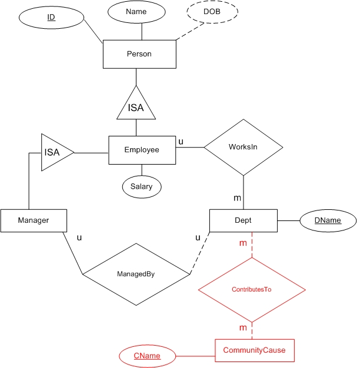

<table dir="ltr" cellSpacing="0" cellPadding="0" width="100%" border="0">
  <tr>
    <td vAlign="top">
    <p class="MsoTitle"><font size="5">
    <span style="FONT-STYLE: italic; FONT-FAMILY: Arial">Solution for Homework 
    #</span><span style="font-family: Arial; font-style: italic">2</span></font></p>
    <p><b>1.</b> (10 Points)</p>
    <p></p>
    <p>&nbsp;</p>
    <p><b>2.</b> (10 Points)</p>
    <p>The main loss is that Manager is no longer an entity. This means any 
	further enhancements that could have been based on Manager as an entity 
	would not be possible. Part 3 shows an enhancement based on Manager as an 
	entity. That enhancement will not be possible. As another example in Part 4 
	we show departments participating in some community activities. Similarly, 
	one could think of some new relationships where manager entities could 
	participate. But this too will no longer be possible either after changing 
	the scheme as in Part 1. </p>
    <p><b>3.</b> (15 Points)</p>
    <p></p>
    <p>&nbsp;</p>
    <p><b>4.</b> (15 Points)</p>
    <p></p>
    <p>&nbsp;</p>
    <p><b>5.</b> (30 Points)</p>
    <p></p>
    <p>This solution is bit tricky. Here a new entity Section has been created 
	for course offerings. </p>
    <p>&nbsp;</p>
	<p><b>6.</b> (20 Points)</p>
    <p>Each entity and relationship should be translated into a table. There are 
    10 tables in total.</p>
    <p><font face="Courier New" size="2">Person (<u>ID</u>, Name, DOB, Address)<br>
    Student (<u>StudentID</u>, GPA, Classification)<br>
    Instructor (<u>InstructorID</u>, Salary, Rank)<br>
    MentoredBy (<u>StudentID</u>, InstructorID)<br>
    HasSections (<u>ReferenceNo</u>, CourseCode, SectionNo)<br>
    Section (<u>ReferenceNo</u>)<br>
    Course (<u>CourseCode</u>, CourseName)<br>
    PreReq (<u>CourseCode</u>, <u>PreReqCourseCode</u>)<br>
    Enrolls (<u>StudentID</u>, <u>ReferenceNo,</u> Grade)<br>
    Offers (InstructorID, <u>ReferenceNo</u>)</font></p>
    <p><font face="Times New Roman">After removing redundancy: </font></p>
    <p><font size="2" face="Courier New">Person (<u>ID</u>, Name, DOB, Address)<br>
    Student (<u>StudentID</u>, GPA, Classification, Mentor)<br>
    Instructor (<u>InstructorID</u>, Salary, Rank)<br>
    Course (<u>CourseCode</u>, CourseName, <u>PreReq</u>)<br>
    Offering (<u>ReferenceNo</u>, CourseCode, SectionNo, InstructorID)<br>
    Enrolls (<u>StudentID</u>, <u>ReferenceNo,</u> Grade)</font></p>
    <p><font face="Times New Roman">All details have not been shown here. 
    Observe that the only difference between this and the scheme in Project 1, 
    is mainly in Offering. In our design here ReferenceNo is distinct across all 
    offerings of all courses, therefore it forms a key. </font></p>
    </td>
  </tr>
</table>